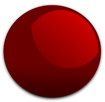

This NFT currently belongs* to {{name}} 
Claim it! apply
* this random website says their name next to a picture I made. They are not allowed to revoke my permission to keep this stupid joke running.